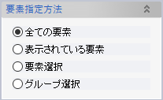
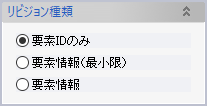
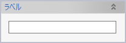
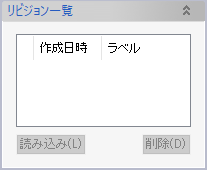

リビジョン作成
3Dモデルの全部または一部を、名前をつけてドキュメント内に保存しておくことができます。これをリビジョンといいます。
保存されたリビジョンは、あとから「3Dモデルの今の状態」と比較することができます。
リビジョンの保存形式は3種類あります。
- 要素IDのみ
- 要素の有無のみを保存・比較できます。データサイズは非常に小さいですが、形状や属性の比較はできません。
- 要素情報（最小限）
- ドキュメントを保存する際の「最小限の情報のみ保存」オプションをONにした場合と同様に、要素を作成する際に指定したパラメーターのみを保存し、ソリッド形状は保存されません。そのためデータサイズはコンパクトですが、形状の比較をするためにはソリッド形状を再計算する必要があり、時間がかかります。
- 要素情報
- ソリッド形状も含めてすべての要素情報を保存します。データサイズは大きくなりますが、形状比較する際に再計算の必要がありません。
操作方法
リビジョンとして保存したい要素を選択し、保存形式とラベルを指定してOKをクリックします。
パラメーター
- 要素指定方法

リビジョンに含める要素の指定方法を選択します。
- リビジョン種類

保存形式を指定します。
- ラベル

リビジョンに名前をつけます。
- リビジョン一覧

ドキュメント内に保存ずみのリビジョン一覧が表示されます。「削除」ボタンをクリックするとリビジョンを削除できます。
リビジョンの作成および削除操作はUndoする（もとに戻す）ことができませんのでご注意ください。